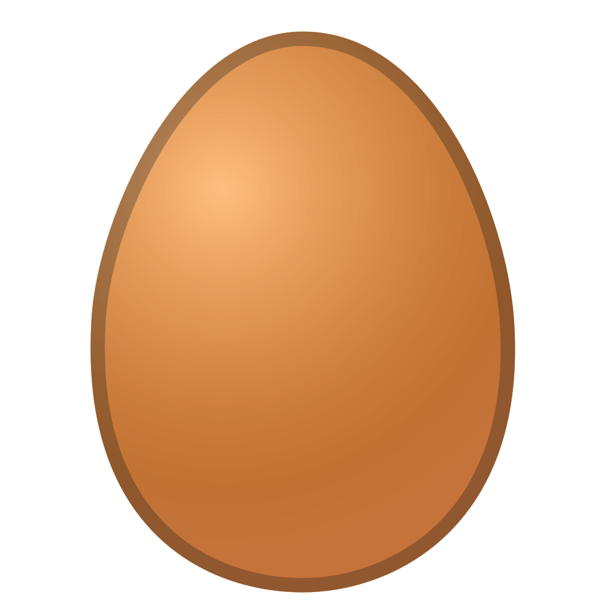

Valkyrie
Val, Val-pal, Valley Girl, Shining Twin #1
Val is top of the flock. As our bossiest hen, she is always front of the line whenever treats are involved. She is also very curious and brave. She's always first to investigate something new!
Large cream with vertical wrinkles
Pesephone
Pers, Percy, Lord Have Mercy it's Miss Percy, Shining Twin #2
Percy is a close second in command to Val. While a bit more standoffish with humans, Percy certainly makes herself known amongst the other hens. Her watchful eye keeps the other safe as much as in line.
Large pale brown
Cherry
Cher-Bear, Cherrypie, Cherry Berry, Creaky Door, Our Little Pine Cone
Cherry is the smallest in our flock but don't let her size fool you. This girl packs a punch of attitude. She's not afraid to get right in the thick of it or to tell you exactly what she thinks with her croaky voice. She's pretty sure she's the boss and no one can tell her what to do.
Extra small cream, often with harmless calcium deposits
Wasabi
Wasabi Bobbi, Sabi Bobbi, Wabi-sabi, Bobbi Girl
Bobbi is far and away the cuddliest chicken we have even met. When everyone else is getting riled up, Bobbi runs to us. If you pat your knee, she will hop right up and she adores scritches. If you ever thought chickens couldn't be affectionate, you've clearly never met Bobbi!
Medium brown egg, often with speckles
Blueberry
Bloob, Bloobers, Blooby-booby
Bloob was the first of our second group of chickens to lay an egg! She's definitely our most outgoing and friendly girl. She's the first to say to anyone who enters her line of sight and will jump into right your lap to do so. Heck, sometimes she can't even wait for you to sit and will go straight to your shoulder instead!
Large medium brown with occassional white speckles
Strawberry
Strob, Shortcake, Shorty, Strobbers, Big Booty Judy
Strob is a sweet and reserved girl. She may not be the first to run up at the sight of newcomers or treats, but she's a good pal to all our other hens! Rarely is she ever on her own, as we often spot her acting as a pillow for her friends. And as the biggest, fluffiest lady in the flock, she plays the part quite well.
Large medium brown with occassional white speckles
Clementine
Clem
Oh our darling Clementine! Whoever said Rhode Island Reds were flighty may have met Clem! While not one for being held, she'll still circle in close if you've got a tasty bribe. Clem is a versatile flock socialite who can hang with the big bosses just as much as she chills with the calmer crew.
Extra large medium brown
Mango
Mango-Tango
Who ever said Rhode Island Reds were bossy and flighty hasn't met a girl like our Mango! Chill and curious with a splash of cautions, it may take her a bit to come close, but she's certainly not opposed to being held for a cuddle. Just maybe make it quick!
Extra large medium brown
Walnut
Wally, Walbert, Wally Girl, Waldorf, Little Miss Emu
Clearly Wally's body grew faster than her motor skills. She's got the longest legs and neck we've ever seen on a chicken! However, she never let her towering stature get to her ego. A little chaotic, a whole lot sweet, Wally marches to the beat of her own drum. Wally is our first mother hen!
Long sage green
Cashew
Cash, Cash-money, Goofy, Goofy Goblin, Goblin Girl
Cash is a chicken that can make you laugh. She gives the goofiest looks! She's an expressive girl, especially when it comes to dust baths. We never knew chickens could purr until we witnessed Cash revel in a pile of dust.
Medium oblong mint-blue
Pickles
Pickoos, Princess Pickles
Pickles was our shiest chicken, counter to usual for her breed. She grew up more slowly than the other girls and learned to take a cautious approach. Now that she's grown up, she's determined to be near the top of the pecking order. She's also really good at chasing down flying bugs!
Large light brown
Graham
Golden Graham, Goldie, Gold's Gym, Mr. Ma'am
When Graham arrived to us, he was marked as a pullet (a female chick). We knew within three days he was a roo just by his rambunctious nature. He sure has grown into a handsome guy who knows how to woo the ladies with a little song and dance. He puts on a big show sometimes, but that doesn't mean he won't tolerate a chin scratch every now and again.
Large medium brown genes
Allons-y
Al, Alanso
Al is a very new addition to the homestead. On mother's day while outside gardening we heard a crow get closer and closer. On investigating, there was a beautiful rooster walking up the path! Since he's found us, he free ranges around the yard, checks in on Wally and her babies, scratches through the compost, and serenades us. We're evaluating his propensity to stay and plan on building a coop for him soon!
Large medium brown and speckled genes
Wally's Babies
The Chicks, Little Peepers, The Babies
Our girl Wally decided this spring she wanted to be a mama! She sat and sat on her (fake, though she didn't know it) eggs. Her determination proved to us she was ready for parenthood. On May 7 we brought home a group of 8 pullets (female baby chicks). She has been a doting and protective mother ever since. Welcome to the homestead, baby chicks!